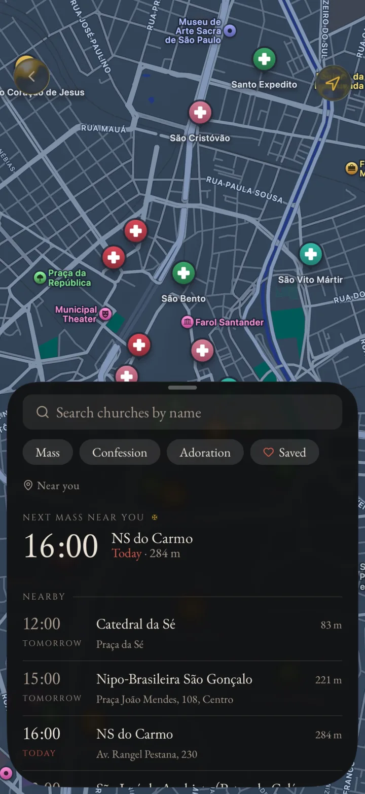
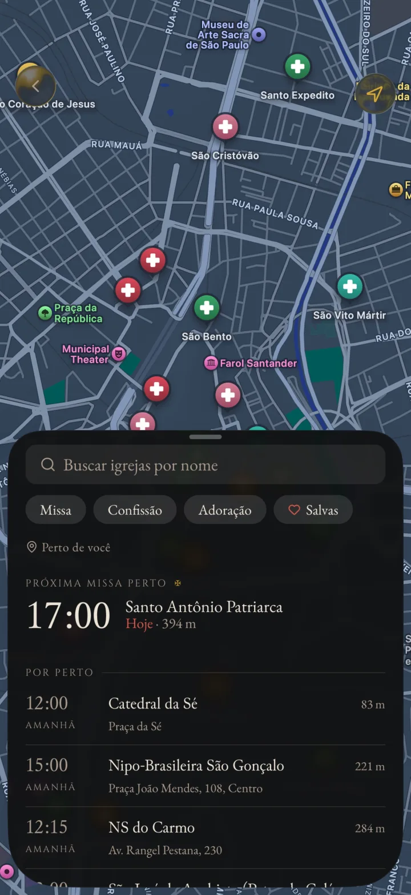

Mass timesHorários de Missa
The next Mass, wherever you are.
A próxima Missa, onde você estiver.
Churches on a map, with the times for Mass, confession and adoration. Open the app and see what starts next, nearby.
As igrejas no mapa, com os horários de Missa, confissão e adoração. Abra o aplicativo e veja o que começa a seguir, perto de você.
MassConfessionAdoration
MissaConfissãoAdoração



